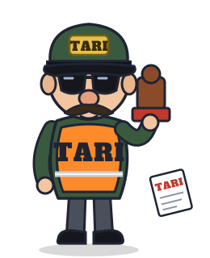

Il titolo Lettere grosse, inclinate e ad arco, oro e rosso con il bordo scuro: lo stile delle locandine d'avventura
Tino avventuriero Foto originali di Tino, con cappello e frusta aggiunti sopra come accessori
Tino non viene ridisegnato: cappello e frusta sono due immagini a parte (assets/tino/accessori/)
appoggiate su ogni foto con posizione e inclinazione su misura. Quando è ferito il cappello finisce di traverso;
quando è KO gli cade per terra.
Frusta in azione Tino si aggancia a un piolo e oscilla sopra il baratro
Gli agenti della Tari Omini in divisa che vogliono solo una cosa: acchiappare Tino

Agente col retino
Il più comune. Fa la ronda avanti e indietro; quando vede Tino accelera e prova a prenderlo col retino. Gilet giallo fluorescente con TARI sul petto e stemma sul berretto.

Agente col timbro
Sta fermo nei punti alti e lancia bollette della TARI che volano a parabola: vanno schivate o saltate. Da vicino tenta di timbrare Tino.
Ispettore capo
Il capo, alla fine di ogni mondo. Più grosso e più lento, col megafono chiama rinforzi e fa tremare il pavimento. Valigetta e distintivo TARI.
Gli agenti non sono peluche, quindi sono disegnati (vettoriali, si animano con oscillazioni e saltelli come Tino). Se però avete un pupazzetto o un omino da fotografare, si può fare come per Tino e Gino.
Una stanza di esempio Come potrebbe apparire un pezzo di livello
- A partenza
- B uscita
- 1 pulsante a terra
- 2 saracinesca
- 3 spuntoni
- 4 piolo per la frusta
- 5 pavimento che crolla
- 6 ceci